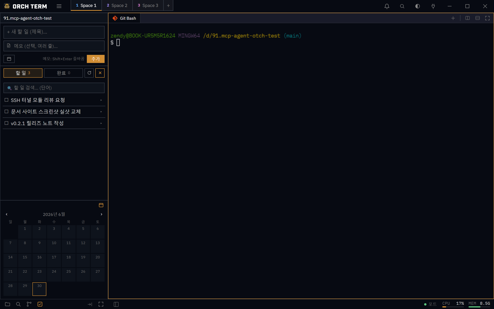

핵심 기능 · 할 일 보드
할 일 보드
Space마다 독립된 to-do 보드입니다. 제목·메모·마감일을 적고 할일/완료 탭과 월 달력으로 관리하며, 같은 Space의 앱 안 AI도 같은 보드를 함께 씁니다.
할 일 패널 열기
사이드바 모드바의 할 일 아이콘이나 Ctrl+Shift+T로 엽니다(명령 팔레트의 "할 일"도 가능). 보드는 현재 Space 전용이라 Space를 바꾸면 그 Space의 할 일이 나옵니다.
새 할 일 — 제목 · 메모 · 마감
탭 줄 우측 + 버튼으로 입력 영역을 펼칩니다. 제목은 한 줄, 메모는 여러 줄(Shift+Enter 줄바꿈), 마감일은 달력 팝업으로 고릅니다.
-
+ 토글로 입력 펼치기

① + 토글로 펼친 입력 영역(제목·메모·마감). ② 하단 달력으로 선택일·마감일을 한눈에 봅니다. -
마감일 — 달력 팝업
마감일 버튼을 누르면 월 달력이 뜹니다. 날짜를 고르면 마감 배지가 붙습니다.
마감일 선택2026년 6월‹ ›일월화수목금토 25262728293031 1234567 891011121314 15161718192021 22232425262728 293012345① 선택일(채움)과 마감이 있는 날(점)을 한눈에 봅니다.
카드 — 완료 · 메모 · 액션
각 카드는 완료 토글(왼쪽 체크)·마감 배지·메모 표시를 보여주고, 펼치면 메모 본문과 액션 아이콘(마감 · 편집 · 복사 · 삭제)이 나옵니다.
할 일 — 펼친 카드 + 완료
할 일
할 일 2완료 5 검색
포트 포워딩 터널 문서화
7/2 (수) 메모
-L 로컬·-D SOCKS5 두 모드, 레일 오버레이 스크린샷 포함
SSH Phase 2 reference 문서완료
6월 · 마감 1건
① 펼친 카드의 메모 본문 + 액션(마감 · 편집 · 복사 · 삭제). ② 완료하면 체크 + 취소선.
할일/완료 탭 · 검색 · 달력
- 할일 / 완료 탭 — 미완료와 완료를 분리. 탭 옆에 개수가 표시됩니다.
- 단어 검색 — 제목·메모를 단어로 필터링.
- 월 달력(하단) — 날짜별 마감 개수 배지. 접기/펼치기 가능.
- 새로고침() — 외부나 AI가 바꾼 할 일을 다시 불러옵니다.
앱 안의 AI(claude·codex·gemini)도 MCP로 같은 보드를 조작하니, 에이전트가 추가한 할 일이 새로고침으로 바로 보입니다.
단축키
| 키 | 동작 |
|---|---|
| Ctrl+Shift+T | 할 일 모드 열기 (mac Cmd+Shift+T) |
| Shift+Enter | 메모 줄바꿈 (작성 중) |
| Ctrl+Shift+P | 명령 팔레트 → "할 일(Tasks)" |